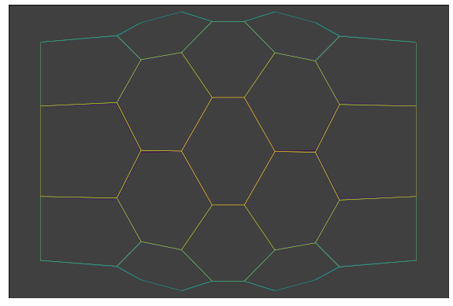

Single Cell apoptosis¶
As decribed in Monier et al. 2015.
We start with a simple hexagonal apical mesh with cylindrical symmetry.
Imports¶
import pandas as pd
import numpy as np
import json
import matplotlib.pylab as plt
%matplotlib inline
import ipywidgets as widgets
from IPython.display import display, Image
import tyssue
from tyssue import Sheet, History
from tyssue import config
from tyssue import SheetGeometry as geom
from tyssue.dynamics.sheet_vertex_model import SheetModel as basemodel
from tyssue.dynamics.apoptosis_model import SheetApoptosisModel as model
from tyssue.solvers.quasistatic import QSSolver
from tyssue.draw import sheet_view, create_gif, browse_history
from tyssue.io.hdf5 import load_datasets
print(tyssue.__version__)
0.8.1
Loading the datasets and specifications¶
Here it is a cylindrical hexagonal mesh.
# Read pre-recorded datasets
h5store = 'data/small_hexagonal.hf5'
from tyssue.io.hdf5 import save_datasets, load_datasets
datasets = load_datasets(h5store,
data_names=['face', 'vert', 'edge'])
# Corresponding specifications
specs = config.geometry.cylindrical_sheet()
sheet = Sheet('emin', datasets, specs)
sheet.sanitize(trim_borders=True, order_edges=True)
geom.update_all(sheet)
# Model
nondim_specs = config.dynamics.quasistatic_sheet_spec()
dim_model_specs = model.dimensionalize(nondim_specs)
sheet.update_specs(dim_model_specs)
sheet.get_opposite()
live_edges = sheet.edge_df[sheet.edge_df['opposite']==-1].index
dead_src = sheet.edge_df.loc[live_edges, 'srce'].unique()
### Boundary conditions
sheet.vert_df.is_active = 1
sheet.vert_df.loc[dead_src, 'is_active'] = 0
sheet.edge_df['is_active'] = sheet.upcast_srce('is_active') * sheet.upcast_trgt('is_active')
First energy minimization¶
min_settings = {
# "minimize":{
'options': {
'disp': False,
'ftol': 1e-6,
'gtol': 1e-5},
# }
}
solver = QSSolver()
res = solver.find_energy_min(sheet, geom, model, **min_settings)
print(res['success'])
True
Custom display function¶
def leg_joint_view(sheet, coords=['z', 'x', 'y']):
geom.update_all(sheet)
x, y, z = coords
datasets = {}
datasets['face'] = sheet.face_df.sort_values(z)
datasets['vert'] = sheet.vert_df.sort_values(z)
edge_z = 0.5 * (sheet.upcast_srce(sheet.vert_df[z]) +
sheet.upcast_trgt(sheet.vert_df[z]))
datasets['edge'] = sheet.edge_df.copy()
datasets['edge'][z] = edge_z
datasets['edge'] = datasets['edge'].sort_values(z)
tmp_sheet = Sheet('tmp', datasets,
sheet.specs)
tmp_sheet.reset_index()
draw_specs = {
'vert': {
'visible': False
},
'edge': {
'color': tmp_sheet.edge_df[z],
#'zorder': depth.values
}
}
fig, ax = sheet_view(tmp_sheet, coords[:2], mode='2D', **draw_specs)
ax.set_xlim(-15, 15)
ax.set_ylim(-10, 10)
ax.set_facecolor('#404040')
ax.set_xticks([])
ax.set_yticks([])
fig.set_size_inches((10, 12))
return fig, ax
fig, ax = leg_joint_view(sheet)

Choosing an apoptotic cell¶
apoptotic_cell = 16
print('Apoptotic cell position:\n{}'.format(sheet.face_df.loc[apoptotic_cell, sheet.coords]))
apoptotic_edges = sheet.edge_df[sheet.edge_df['face'] == apoptotic_cell]
apoptotic_verts = apoptotic_edges['srce'].values
print("Indices of the apoptotic vertices: {}".format(apoptotic_verts))
Apoptotic cell position:
x -7.994251
y 3.348658
z -4.493606
Name: 16, dtype: float64
Indices of the apoptotic vertices: [33 42 34 41 43 44]
Cell behaviours, such as division or apoptosis, are defined as a series of unit changes in the tissue, such as the cell growth, or the abscission of the cell face once division is complete. For a given behavior, the next step often depends on the current state. This is managed by an EventManager object, which runs the behaviour.
from tyssue.behaviors.sheet import apoptosis
from tyssue.behaviors import EventManager
manager = EventManager('face')
sheet.settings['apoptosis'] = {
'shrink_rate': 1.2,
'critical_area': 8.,
'radial_tension': 0.2,
'contractile_increase': 0.3,
'contract_span': 2
}
sheet.face_df['id'] = sheet.face_df.index.values
manager.append(apoptosis, face_id=apoptotic_cell, **sheet.settings['apoptosis'])
Here is the code for the apoptosis behavior:
def apoptosis(sheet, manager, **kwargs):
"""Apoptotic behavior
While the cell's apical area is bigger than a threshold, the
cell shrinks, and the contractility of its neighbors is increased.
once the critical area is reached, the cell is eliminated
from the apical surface through successive type 1 transition. Once
only three sides are left, the cell is eliminated from the tissue.
Parameters
----------
sheet : a :class:`Sheet` object
manager : a :class:`EventManager` object
face_id : int,
the id of the apoptotic cell
shrink_rate : float, default 0.1
the rate of reduction of the cell's prefered volume
e.g. the prefered volume is devided by a factor 1+shrink_rate
critical_area : area at which the face is eliminated from the sheet
radial_tension : amount of radial tension added at each contraction steps
contractile_increase : increase in contractility at the cell neighbors
contract_span : number of neighbors affected by the contracitity increase
geom : the geometry class used
"""
apoptosis_spec = default_apoptosis_spec
apoptosis_spec.update(**kwargs)
face = apoptosis_spec["face"]
if sheet.face_df.loc[face, "area"] > apoptosis_spec["critical_area"]:
# Shrink and pull
shrink(sheet, face, apoptosis_spec["shrink_rate"])
ab_pull(sheet, face, apoptosis_spec["radial_tension"])
# contract neighbors
neighbors = sheet.get_neighborhood(
face, apoptosis_spec["contract_span"]
).dropna()
neighbors["id"] = sheet.face_df.loc[neighbors.face, "id"].values
manager.extend(
[
(
contraction,
{
"face_id": neighbor["id"],
"contractile_increase": (
apoptosis_spec["contractile_increase"] / neighbor["order"],
),
},
)
for _, neighbor in neighbors.iterrows()
]
)
done = False
else:
if sheet.face_df.loc[face, "num_sides"] > 3:
exchange(sheet, face, apoptosis_spec["geom"])
done = False
else:
remove(sheet, face, apoptosis_spec["geom"])
done = True
if not done:
manager.append(apoptosis, **apoptosis_spec)
We perform the events at each time points to run the simulation
t = 0
stop=100
progress = widgets.IntProgress(min=0, max=stop)
progress.value = 0
display(progress)
history = History(sheet)
while manager.current and t < stop:
manager.execute(sheet)
t += 1
progress.value = t
res = solver.find_energy_min(sheet, geom, model, **min_settings)
history.record()
manager.update()
3D view with ipyvolume¶
color = sheet.vert_df['y']
fig, mesh = sheet_view(sheet, coords=['z', 'x', 'y'], edge={"color":color}, mode="3D")
fig
browse_history(history, edge={"color":lambda s : s.edge_df["length"]})
Provided you have ImageMagick installed, we can convert the output to a nice gif, like so:
create_gif(
history,
'single_apopto.gif',
num_frames=15,
draw_func=leg_joint_view
)
Image("single_apopto.gif")
<IPython.core.display.Image object>